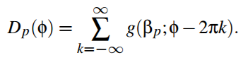

Abstract
In this project, we implemented a well known scattering model for rendering realistic hair. Based on this model, we built a custom hair BSDF class for the Mitsuba renderer. We explored the effects of changing particular constants of the scattering model on how hair is rendered.
Implementation
The Model
The model we used is based on Stephen Marschner's hair scattering model, extended by Eugene d'Eon (both cited in references). The model consists of two parts: longitudinal scattering and azimuthal scattering. Each part has three main components of light transport: single reflectance R (reflected once off the hair fiber), double transmittance TT (refracted into and out of the hair fiber), and trans-ref-trans TRT (refracted, reflected within hair fiber, and refracted again).
The scattering model represents each hair fiber as a cylindrical shape. The shape can be viewed as a group of stacked cones, giving the fiber its rough surface. Figure 1 shows how the model represents a hair fiber (the variables will be discussed).
Reflectance and Transmittance Components
Each ray of light creates three components as introduced above.
- R - single reflectance: responsible for primary specular lighting. It is shifted towards the root due to the scales of hair fiber
- TT - double transmittance: forward scattering component. Lighter color hair becomes bright when lit from behind (light rays go through the hair)
- TRT - transmittance-reflectance-transmittance: secondary lighting, weaker than specular, but creates a diffuse gradient in hair
In our model, we found that the R component is miniscule compared to the other two components. Because of this, we scaled R by a large constant value to bring out specular highlights.
Longitudinal Scattering
The longitudinal perspective looks at the hair fiber from a 'side view'. Because of this, the rough surface is taken into account.
Each reflectance/transmittance component is accompanied with an alpha and a beta value. The alpha value represents the longitudinal shift of the reflectance/transmittance lobe (the area where the outgoing ray can point). This shift is caused by the roughness in the hair fiber due to the conic scales of hair. The beta value represents the standard deviation of deflection out of the specular cone in the longitudinal direction also due to the roughness of the scales. These values are constants set before rendering.
The longitudinal scatter is modeled by the function M, as described by:
where theta_h is the half angle of the incident and outgoing angles and g is the Gaussian function:
The p parameter represents the reflectance/transmittance component, where R = 0, TT = 1, and TRT = 2. These values will be used explicitly in the azimuthal scattering model.
Marschner's paper provided a range of 5 to 10 degree for beta and a range of -5 to -10 degree for alpha. Through manual testing, we found that the optimal degrees are approximately -6 and 6 degree for alpha and beta respectively. Results can be found below, but we discovered that a higher beta value saturates the render to a more even gradient.
Azimuthal Scattering
The azimuthal scattering model is more complex than the longitudinal scattering model. This model looks at the hair fiber from a 'straight view'. The hair fiber is now modeled as a circular cross section and the position of the light ray hitting the fiber is taken into account.
The diagram shows an h value that represents the offset from the center of the circle where the light ray hits the hair fiber. This matters in how light is reflected and transmitted within the hair fiber. From the discussion of h, there are two approaches outlined by Marschner's and d'Eon's papers:
- Near field model: for rendering zoomed-in shots of hair fibers. This model calculates the exact h value based on the intersection information. This makes the model accurate for zoomed-in shots.
- Far field model: for rendering zoomed-out shots of hair as a collective. This model approximates that a light ray hits the entirety of a hair fiber and integrates the offset h over the azimuthal surface.
The azimuthal scatter is modeled by the function N, as described by:
The azimuthal scatter model depends on two terms: A and D. A is the attenuation of light depending on where the light ray hits the hair fiber (i.e. hitting right at the center would result in no attenuation). D is the Gaussian distribution of exitant azimuths (where the exiting ray is likely to point). Note: the above model is an integration, which is a far field model. Our model ignores the integration and uses h as mentioned in the above two methods (random and fixed).
Gaussian distribution D
D is described by:
In our model, we did not sum from negative infinity to positive infinity, but approximated the summation with k = -1, 0, and 1. The Phi term in the N function is defined by:
and eta_prime, a modified index of refraction to take into account the roughness of the fiber, is
Attenuation A
The attentuation A is described as:
where the f term, which depends on the traditional Fresnel evaluation F, and absorption term T are described by:
where mu_prime is the (reduced) absorption coefficient of the hair, theta_d is the difference angle between the incident and outgoing angles, and the gamma_t term is defined above under the Gaussian distribution D.
Absorption Coefficient
The absorption coefficient describes color of the hair fiber. The coefficent is given in a {r, g, b} vector. In both papers, it is assumed that the coefficient is uniform throughout the whole fiber and it is changed in our model to render different colors of hair.
Results
Changing h offset values
|
|
|
|
Changing beta value with fixed alpha (alpha = -0.1 radians)
|
|
|
|
Changing h offset value with a scaled R component
|
|
|
|
Changing absorption coefficient for coloring
|
|

|
|
Problems
- h offset integration: For azimuthal scattering, we did not know how to integrate over h in C++ code, so we could not fully take advantage of the far field model given to us. Because of this, we resorted to randomizing h, which is an approximate equivalence of integrating, though it produces more noise
- h offset calculation: We did not know how to calculate h based on the intersection information given to us by the Mitsuba renderer, so we also could not fully take advantage of the near field model. We replaced this by substituting a fixed h.
Things We Learned
- How to build a custom BSDF in Mitsuba
- Hair is hard to model due to its collective as well as individual behavior
- An accurate, physically-based hair rendering model
- Mitsuba is hard to develop in
References
Light Scattering from Human Hair Fibers - Stephen Marschner
An Energy Conserving Hair Reflectance Model - Eugene d'Eon
Contributions
Michael Wan - summarized mathematical model of hair scattering; came up with fixed h approach; came up with R scale approach; tested different h settings; tested diferent R scale settings
Quan Huynh - implemented mathematical functions in bsdf code; came up with randomized h approach; tested different alpha and beta settings; created presentation slides and report